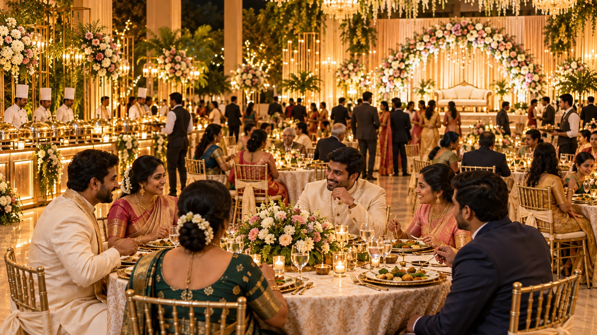
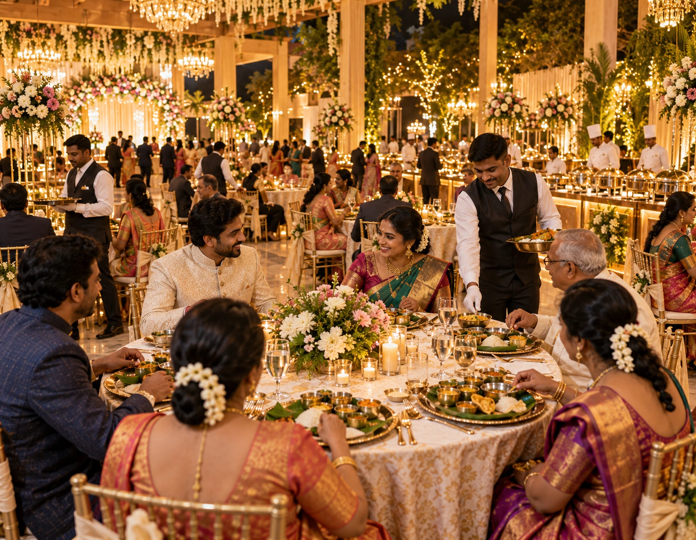
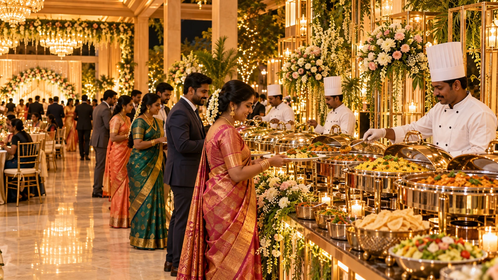
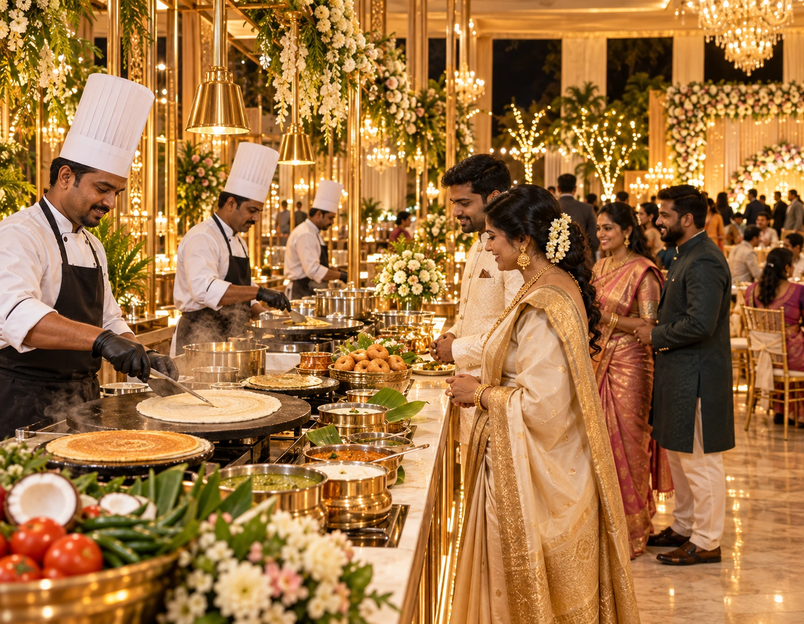
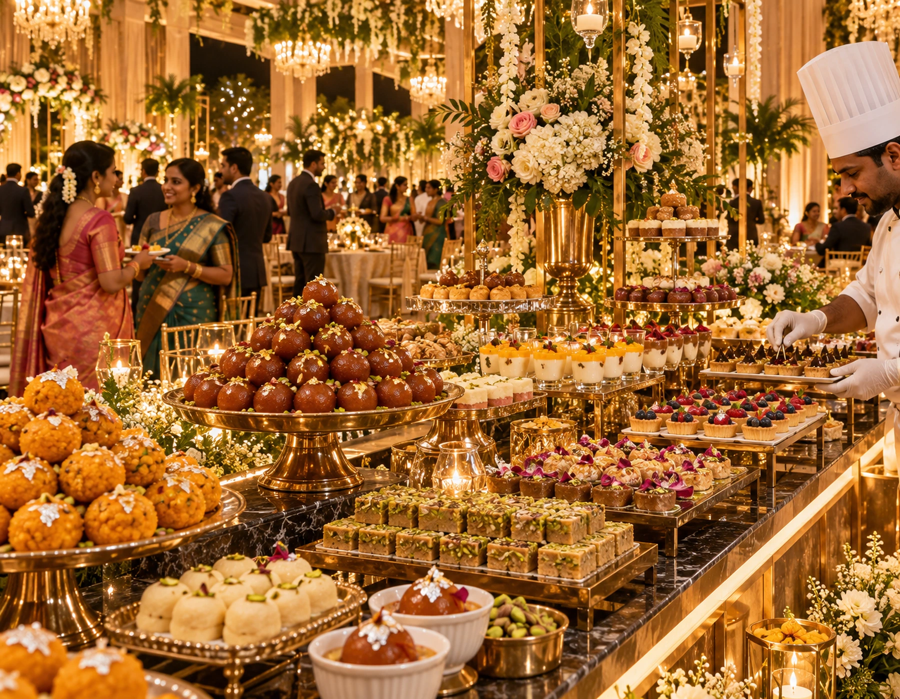
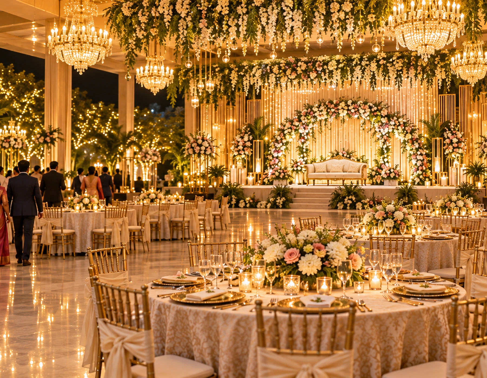

Arrival waves, not a single meal bell
We estimate when the first, peak and late guest groups are likely to dine so hot dishes, starters and desserts can be released in smaller fresh batches instead of one oversized opening batch.

Wedding & Marriage
Evening receptions need a different service rhythm from the wedding meal: guests arrive in waves, spend time at the stage, move between conversations and dinner, and often expect buffet, live-counter and dessert choices to stay fresh throughout the evening.

Reception service overview
A reception is less about one fixed meal time and more about managing waves of arrivals. The food plan should stay attractive and fresh while guests alternate between the stage, photographs, conversation and dinner.
We plan the service from the entrance onward: welcome drinks, starter circulation, dining access, live counters, dessert release and the final coffee or tea round. That sequence helps avoid a crowded buffet opening and gives late-arriving guests the same quality as the first group.
Share the reception start time, venue layout, expected peak-arrival window, approximate guest count and preferred service style. Those details determine how many counters, runners and replenishment points the evening needs.
Why reception planning is different
The best reception menu can still feel disorganised if arrival waves, stage queues and dining movement are not planned together.
We estimate when the first, peak and late guest groups are likely to dine so hot dishes, starters and desserts can be released in smaller fresh batches instead of one oversized opening batch.
Guests waiting to greet or photograph with the couple should not block the route to food. Counter placement and directional flow are planned around the stage approach and exit path.
For receptions with banquet tables, we account for aisle width, elderly guests, children, chair movement and service clearance so dining remains comfortable even when the hall is busy.
A reception may continue well beyond the first dinner wave. We plan replenishment, live-station shutdown order and dessert holding so later guests do not receive tired food.
What the reception plan covers
The final quotation may vary, but a clear reception brief should settle these operational decisions before the cooking schedule is closed.
Reception formats
The same guest count can require a completely different service plan depending on whether the evening is buffet-led, table-led or built around live stations.
A broad reception dinner with clearly separated starters, mains, accompaniments and desserts, supported by two-way guest movement where the hall allows it.
Dosa, appam, chaat, pasta or other chosen live stations become part of the entertainment, so queues and cooking capacity must be balanced with the main buffet.
Guests spend longer at tables and may prefer assisted water, starter and clearance service before visiting the main food counters.
When arrivals come continuously, the team focuses on fast replenishment, visible counter zoning and keeping walkways clear near the stage and entrance.
Cuisine choices
A reception can offer variety without becoming a disconnected collection of counters. We recommend combinations that can be served efficiently in the same hall.
Customising the evening
Reception customisation is as much about service behaviour as it is about adding dishes.
If both are served, use clearly separated counters, utensils and service teams so guests can choose confidently and cross-contact is reduced.
Reserve easy-access seating, keep less-spicy options visible, and avoid making elderly guests walk across the full hall for every course.
Simple familiar dishes, smaller portions and quick access to water or beverages make the evening easier for families with young children.
Hold back selected batches and avoid closing every live station at once. The last significant arrival wave should still see a complete, presentable meal.
Live stations
The right live counter adds aroma and freshness. The wrong placement can create the longest queue in the hall.
Service styles
The layout and staffing change significantly between self-service buffet, assisted buffet, table service and hybrid formats.
Scaling the reception
Two receptions with the same guest total may need different teams if one has a sharp dinner rush and the other has a longer arrival window.
A smaller reception can use fewer counters, but presentation and timing still matter because guests spend more time interacting with the hosts.
Duplicate high-demand dishes, maintain one clear dessert zone and use floor staff to prevent guests from forming one long line.
Multiple buffet lanes, additional replenishment runners and dedicated live-counter queues become more important than simply increasing vessel size.
Planning process
A simple production sequence keeps menu decisions, venue logistics and service staffing connected.
Food safety during a long evening
Reception service can run for several hours, so holding discipline matters as much as cooking quality.
Venue logistics
Power, water, loading access and back-of-house movement determine how smoothly the guest-facing service performs.
Identify where hot boxes, spare vessels, plates and consumables can wait without blocking venue staff or guest movement.
Confirm safe electrical load, extension routing and backup requirements before adding induction, warming or beverage equipment.
Plan potable water, handwashing and utensil-cleaning points close enough to operations but away from guest circulation.
Used plates, glassware and waste should leave the dining area through a defined route that does not cross the incoming food path.
Reception service team
A reception needs visible hospitality as well as invisible coordination between kitchen, counters and dining tables.
Watches the entire hall, speaks with the host or venue coordinator and changes counter or staffing priorities as guest flow changes.
Keeps serving vessels clean, full and presentable while communicating low-stock items to the production team before they run out.
Move food, water, plates and used tableware through separate routes so guest areas stay tidy without interrupting conversations.
Reception in motion
The reception gallery focuses on guest circulation, dining comfort and counter presentation rather than ceremony-time meal service.

Reception food presentation
These visuals illustrate the kind of buffet, live-counter and dessert presentation suited to an evening reception.



Example reception plan
The example below is a planning scenario, not a claim about a specific past client event.
This approach reduces the common reception problem where every counter opens at once, crowds immediately and then looks tired for the rest of the evening.
What hosts usually care about
Rather than treating generic praise as proof, use these practical expectations to judge whether the service plan fits your event.
Guests should be able to find food, seating and water without asking several people for directions.
Before you confirm
Clear answers on staffing, replenishment, live-counter capacity and late-guest service are more useful than a long generic promise.
Ask who will be the event-day floor contact, how many buffet lanes are planned, and what happens if the peak dinner wave is heavier than expected.
Reception venues
Reception food flow changes with the building. Counter placement should be decided after considering the stage, entrances, lifts, parking and kitchen access.
Service area planning
Travel time matters most for hot-food finishing, staff reporting and the return movement of equipment after a late evening event.
For venues outside central Vellore, share the exact location early so loading access, travel buffer and kitchen or staging requirements can be checked before the quote is finalised.
Reception pricing
Reception pricing depends on service complexity as much as the number of dishes.
A larger crowd may need more duplicate counters, service staff and replenishment runners, especially when most guests dine in the same hour.
Extra starters, premium ingredients, chilled desserts and made-to-order stations increase production, equipment and staffing requirements.
Assisted buffet, table-passed starters, dedicated family tables and extended beverage service require different labour levels.
Distance, late-night service, lift access, temporary power, kitchen restrictions and loading windows can all change the operational cost.
Reception service options
These are planning formats, not fixed-price promises. The final quote follows the confirmed guest count, dishes, counters and venue.
Welcome beverage, selected starters, a balanced main buffet, sweets or dessert, water service and the required buffet crew.
Adds one or more made-to-order stations with dedicated chefs, queue planning and replenishment support.
A broader guest experience with passed starters, multiple cuisine zones, enhanced dessert presentation and additional floor service.
Reception catering FAQs
These answers focus on reception timing and service flow rather than wedding-ceremony meal planning.
Usually after observing the actual arrival pattern rather than at an arbitrary clock time. Welcome drinks and starters can begin first, then the main buffet can open when enough guests are ready to dine without creating an immediate crush.
Keep selected hot dishes in controlled later batches and avoid closing every live counter at once. The final service plan should identify when the last meaningful guest wave is expected.
Yes, where the venue and staffing allow it. Passed or table-assisted starters can reduce the first buffet rush, but the number of servers and table layout need to support the plan.
There is no reliable one-size-fits-all number. Hall width, guest count, peak dining window, menu complexity and whether live counters are separate all affect the answer.
Yes. Separate zones, serving utensils and clear guest-facing organisation can be planned when both menus are included.
Reception food philosophy
A reception menu succeeds when it can be produced repeatedly in clean, attractive batches instead of looking impressive only at opening time.
Choose dishes that hold and replenish well, and size vessels so the buffet can be refreshed instead of left overfilled.
Give guests enough celebratory variety while keeping a dependable core meal that works across age groups.
Dessert, fruit, paan and hot beverages should have their own service window and presentation rather than being squeezed into the main buffet line.
Plan your reception dinner
Start with the date, venue, reception timing and approximate guest count. Menu preferences can be refined after the service format is understood.
If possible, also mention whether the venue uses round tables or a separate dining hall, whether you want live counters, and when you expect the busiest arrival period.
Your name, contact number and event date are enough to open the enquiry. Add venue and guest-count details in the WhatsApp conversation.
Speak to the team
A short call can clarify the service format before you spend time comparing detailed menus.
Venue coordination
The venue location helps us think through travel time, loading access and the practical setup window.
Distinct content profile · Reception Catering
This section is written specifically for Reception Catering. It uses a different set of operational checkpoints, venue questions and guest-service priorities so the page is not a copy of another catering or locality page. The final choices still depend on the confirmed venue, guest count, menu and event schedule.
Mark the likely 30–60 minute period when the most guests will enter. Staffing and buffet-lane count should be designed for that peak, not the total duration.
Keep the line for greeting the couple separate from the entrance to dinner so guests can choose either activity without blocking the other.
Define where servers can pick up and return starter trays without crossing the main buffet queue or the stage approach.
Open lanes progressively based on crowd build-up. A second lane is most useful before the first queue becomes visibly long.
Estimate how many portions each station can cook per minute and add a second cooking surface or a different counter when demand will exceed that rate.
Keep a small number of easy-access tables close to water and dining service for elderly guests and families who should avoid long walks.
Open desserts after the first main-course wave has started to clear, not simply because the reception has reached a certain clock time.
Assign staff to clear used plates and refresh water continuously so later guests do not enter a dining area filled with uncleared tables.
Reserve a controlled amount of hot food and desserts for the final arrival wave rather than leaving the entire buffet exposed for hours.
Place water and beverage refills where runners can reach them quickly without carrying crates through guest seating.
Close low-demand stations first and keep at least one complete hot-food route available until the agreed final service window.
Plan final clearance, waste removal and equipment loading so the hall can close cleanly without interrupting family members who are still on site.